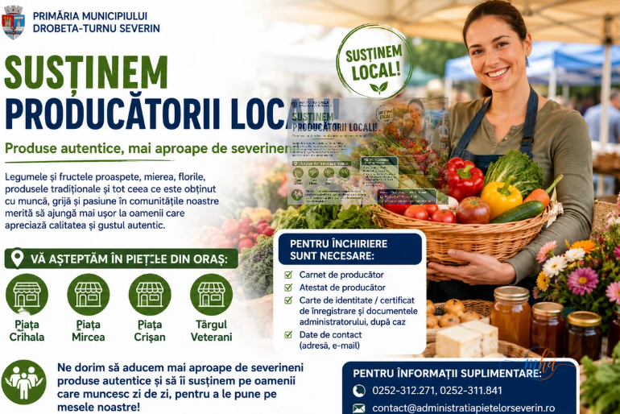
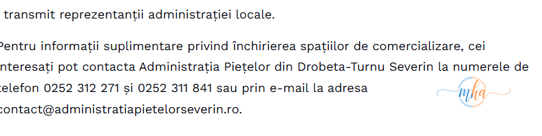

Primăria Municipiului Drobeta-Turnu Severin își reafirmă sprijinul pentru producătorii locali și continuă demersurile prin care produsele obținute în comunitățile din județ și din împrejurimi să ajungă cât mai aproape de severineni. Legumele și fructele proaspete, mierea naturală, florile, produsele tradiționale și toate bunătățile realizate cu muncă, grijă și pasiune de producătorii locali reprezintă o parte importantă a identității și economiei locale.
Prin această inițiativă, municipalitatea urmărește să faciliteze accesul severineni la produse locale de calitate, să susțină micii producători și să contribuie la dezvoltarea economiei locale. Piețele orașului sunt chemate să rămână locuri vii, spații ale comunității unde calitatea primează în fața cantității, iar autenticitatea — în fața produselor de serie.

Patru locații disponibile pentru producătorii locali
Administrația locală pune la dispoziția producătorilor mese special amenajate pentru comercializare în patru piețe agroalimentare din municipiu. Fie că ești din Mehedinți sau dintr-un județ învecinat, îți poți vinde produsele direct consumatorilor severineni, fără intermediari.
Documente necesare pentru închirierea unui spațiu
Procedura de înregistrare este simplă și accesibilă. Producătorii interesați să își comercializeze produsele în piețele din Drobeta-Turnu Severin trebuie să prezinte Administrației Piețelor următoarele documente:
📋 Acte necesare pentru închiriere spațiu de comercializare

De ce să îți vinzi produsele în piețele Severinului
Vânzarea directă în piețele agroalimentare ale municipiului aduce beneficii concrete atât pentru producători, cât și pentru consumatori. Producătorii beneficiază de un spațiu organizat, cu vizibilitate crescută și acces la un număr mare de cumpărători. Consumatorii, la rândul lor, au certitudinea că achiziționează produse proaspete, locale și verificate, direct de la sursă, la prețuri corecte.
Administrația locală subliniază că inițiativa se înscrie într-o strategie mai largă de dezvoltare a economiei locale și de consolidare a legăturilor dintre mediul rural și urban din județul Mehedinți. Fiecare produs cumpărat de la un producător local înseamnă un loc de muncă susținut, o familie sprijinită și o comunitate mai puternică.
„Ne dorim să aducem mai aproape de severineni produse autentice și să îi susținem pe oamenii care muncesc zi de zi pentru a pune pe mesele noastre alimente sănătoase și produse de calitate. Piețele orașului trebuie să rămână locuri vii, unde producătorii și consumatorii se întâlnesc direct, în beneficiul întregii comunități."
Contact Administrația Piețelor Drobeta-Turnu Severin
Producătorii interesați pot contacta Administrația Piețelor din Drobeta-Turnu Severin pentru informații suplimentare privind disponibilitatea spațiilor, tarifele de închiriere și procedura completă de înregistrare.
📞 Contact Administrația Piețelor Severin
📞 Telefon: 0252 312 271
📞 Telefon: 0252 311 841
📩 E-mail: contact@administratiapietelorseverin.ro